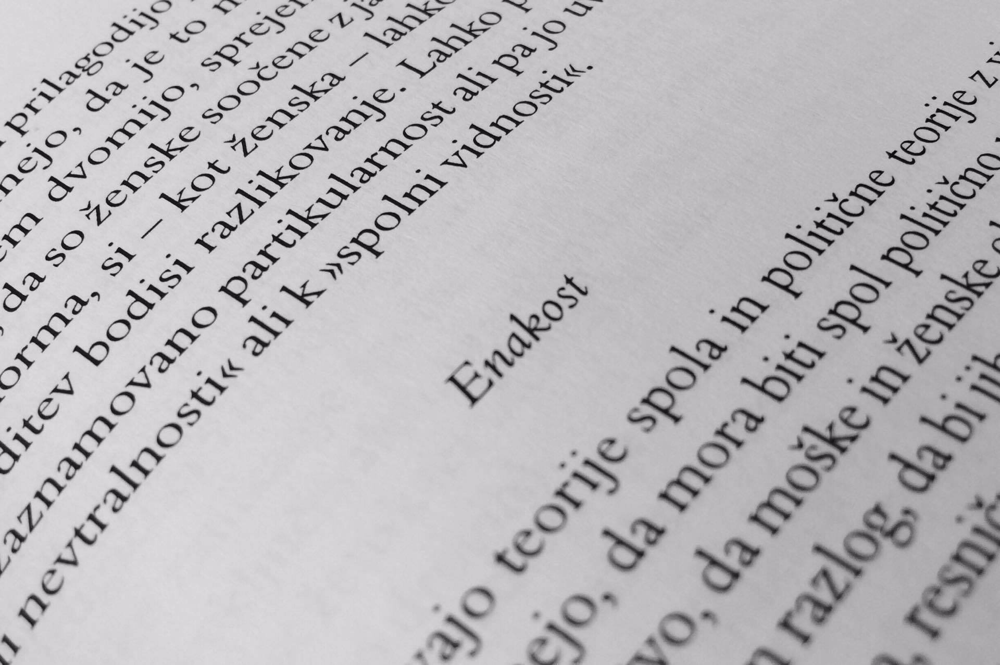

V Sloveniji so v zvezi s feminizmom nastale skupine, ki so se zavzemale za ponovno politizacijo ženskega vprašanja in poudarjale pravico biti enake moškim.
Leta 1984 je bila ustanovljena skupine Ženska sekcija pri Sociološkem društvu, ki velja za prvi diskusijski prostor v Sloveniji. Prvi »samo ženski« javni dogodek po drugi svetovni vojni je organizirala skupina Lilit. Za vpeljavo ženskih študij na univerzo se je osredotočal program Delovne skupine za ženska gibanja in ženske raziskave pri Republiški konferenci ZSMS (Zveza socialistične mladine Slovenije). Skupina Ženske za politiko je spodbujala vključenost žensk v politiko dosegla ustanovitev Komisije za žensko politiko.
